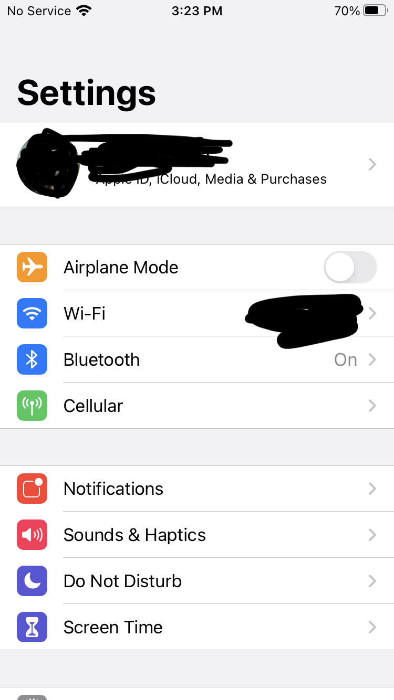
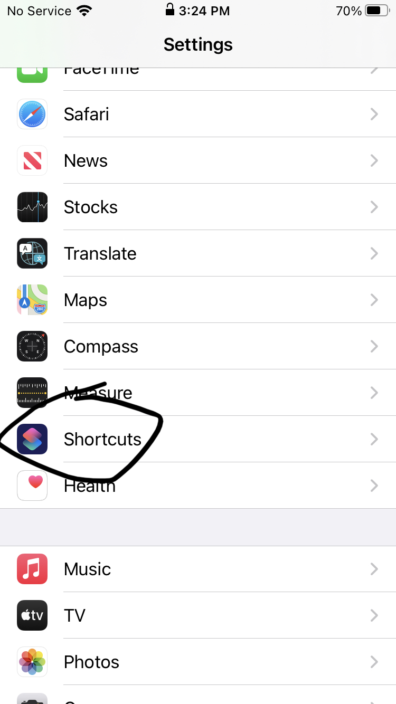
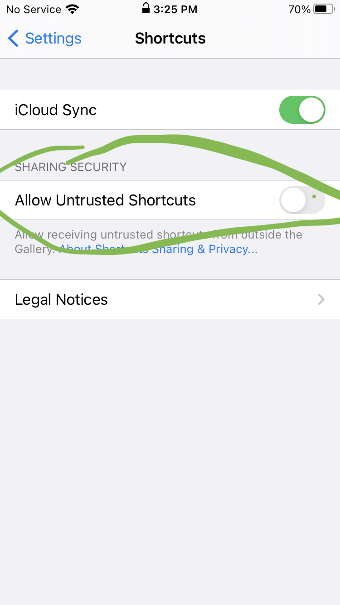
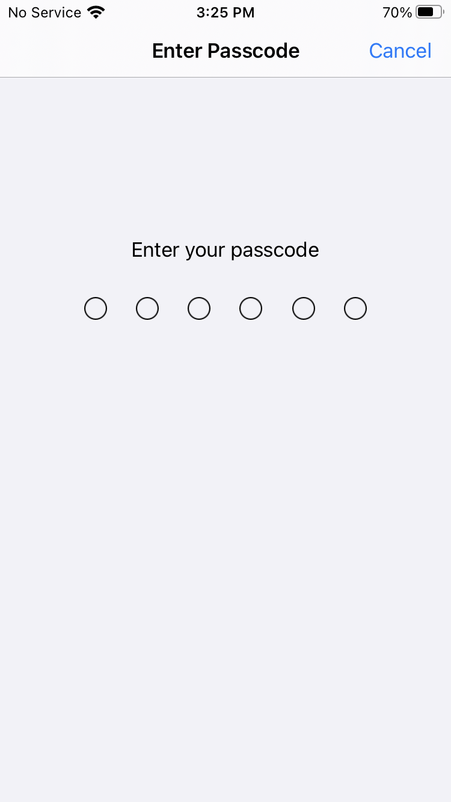
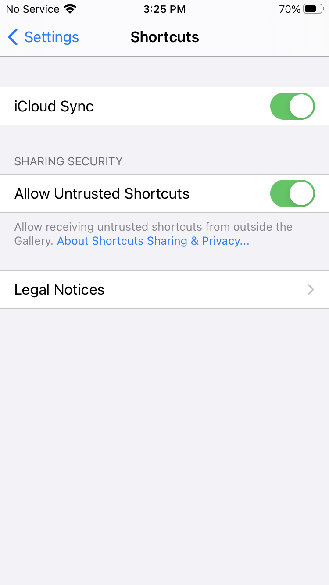

Step 1: This Is What It Should Look Like When You First Download The App

(Really)Step 1: Go To Settings
Step 2: Scroll Down In Settings Until You See "Shortcuts"
Step 3: Click On "Shortcuts" And Then Tap "Allow Untrusted Shortcuts"
Step 4: It Will Prompt Your Password, You Must Write Your Password
Step 5: It Will Now Show At Untrusted Shortcuts As Allowed
Now That You Have Finished All The Instructions Go Back To Download The App And Enjoy!